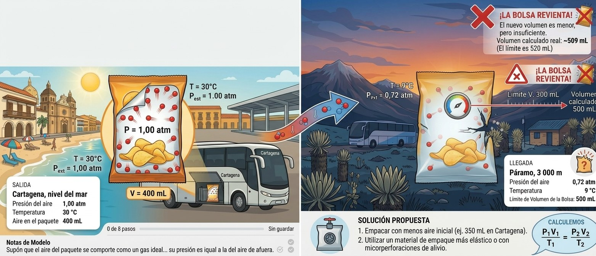

Salida
Cartagena · nivel del mar
- Presión del aire
- 1,00 atm
- Temperatura
- 30 °C
- Aire en el paquete
- 400 mL
Llegada al amanecer
Páramo · 3 000 m
- Presión del aire
- 0,72 atm
- Temperatura
- 9 °C
- El paquete revienta si supera
- 520 mL
Semana 1 · Momento 3 · Aprendizaje basado en problemas
Una familia sale en bus desde Cartagena hacia un páramo de la cordillera, a más de 3 000 metros de altura. En la maleta llevan un paquete sellado de papas fritas. La empresa que los fabrica recibe quejas: algunos paquetes llegan reventados a la montaña y otros no. Tu misión es averiguar por qué y proponer una solución.

Salida
Llegada al amanecer
Supón que el aire del paquete se comporta como un gas ideal, que no se escapa y que su presión es igual a la del aire de afuera.
Tu profesor revisará tus respuestas y dejará la realimentación en tu carpeta de Drive. Puedes volver a esta página para corregir algo: los cambios se guardan solos.